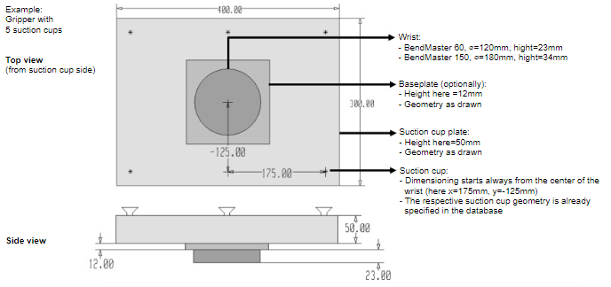

Crear una pinza
La forma en que la pinza sostiene la pieza puede necesitar cambiarse entre algunos pliegues. La base de datos de plegado contiene una gran cantidad de pinzas de plegado, que se pueden usar para el proceso de plegado automatizado. Si es necesario, es posible crear pinzas propias adaptadas a la geometría respectiva de la pieza.
Para crear una pinza, se necesita información sobre la muñeca, placa base opcional, placa de succión y ventosas, junto con sus respectivas posiciones.
Para este propósito, se debe crear un archivo DXF, que incluya la geometría respectiva y los parámetros.
Cree su propia geometría de pinza con las ventosas deseadas, usando el módulo de dibujo.
Para crear una nueva pinza:
-
Abra un nuevo dibujo dentro de TecZone Bend y seleccione la opción de croquis.

-
Cree un dibujo de la pinza con la muñeca, placa base y placa de ventosas (alternativamente, abra un dibujo DXF existente y adáptelo según sea necesario).
-
Aplique un color diferente (por ejemplo, verde) al contorno de la placa base.

-
Para una visualización gráfica correcta de la placa base opcional, debe estar en una capa separada. Seleccione el rectángulo de la placa base y elija la capa como BASEPLATE. El color de la capa cambia a verde.

-
Asegúrese de que el centro de la muñeca esté en el punto cero del dibujo y escriba las entidades de texto requeridas para los parámetros.

-
Muchas de las configuraciones para esta pinza provienen de entidades de texto que tienen la forma CLAVE=VALOR. Aquí están las claves posibles, con sus significados
clave Significado Name
El nombre de la pinza
Weight
Peso de la pinza, en kg.
WRISTDIA
Diámetro de la muñeca (debe ser 120/180 correspondiente a BM60/BM150)
WRISTTHICKNESS
El espesor en Z del cilindro de muñeca debajo. El cilindro de muñeca se extiende desde Z=0 hasta este valor
PLATEEXTENT
La extensión Z (en la forma ZMIN:ZMAX) de la placa. Típicamente, se establece ZMIN igual que WRISTTHICKNESS, para que la placa comience donde termina el cilindro de muñeca.
BASEPLATEEXTENT
La extensión Z de la placa base (vea la sección a continuación sobre Pinzas de dos capas)
CUPNAME
El tipo de ventosa usado para esta pinza (como SAXM50)
CUPS
El número de ventosas
CUP1POS
La posición de la primera ventosa en la forma X,Y
CUP2POS
La posición de la segunda ventosa
CUPNPOS
La posición de la N-ésima ventosa
CUPDIA
Se puede usar en lugar de CUPNAME para especificar una ventosa (no recomendado).
-
Exporte como archivo DXF en la ruta mencionada a continuación después de actualizar los parámetros de texto desde el módulo de dibujo.

Tipos de ventosas
En la base de datos de plegado hay diferentes tipos de ventosas disponibles, que se pueden usar al configurar una nueva pinza.

